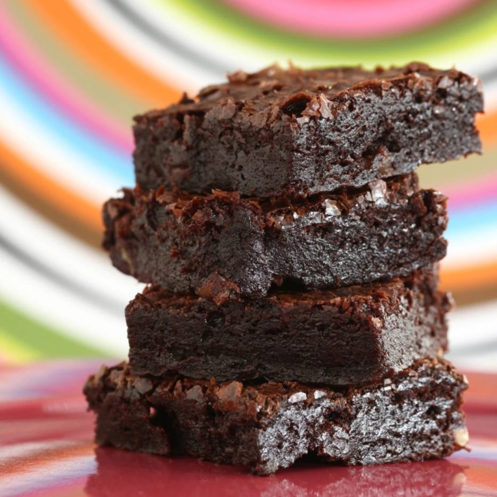

Chocolate Brownie

Description
A chocolate brownie or simply a brownie is a square or rectangular
chocolate baked confection. Brownies come in a variety of forms and
may be either fudgy or cakey, depending on their density. Brownies
often, but not always, have a glossy "skin" on their upper crust.
See more here.
Ingredients
- ½ cup butter
- 1 cup white sugar
- 2 eggs
- 1 teaspoon vanilla extract
- ⅓ cup unsweetened cocoa powder
- ½ cup all-purpose flour
- ¼ teaspoon salt
- ¼ teaspoon baking powder
- 3 tablespoons butter, softened
- 3 tablespoons unsweetened cocoa powder
- 1 tablespoon honey
- 1 teaspoon vanilla extract
- 1 cup confectioners' sugar
Steps
- Preheat oven to 350 degrees F (175 degrees C).
Grease and flour an 8-inch square pan.
- In a large saucepan, melt 1/2 cup butter. Remove
from heat, and stir in sugar, eggs, and 1 teaspoon vanilla.
Beat in 1/3 cup cocoa, 1/2 cup flour, salt, and baking powder.
Spread batter into prepared pan.
- Bake in preheated oven for 25 to 30 minutes. Do not overcook.
- Remove brownies from the oven, and make frosting.
Combine 3 tablespoons softened butter, 3 tablespoons cocoa, honey,
1 teaspoon vanilla extract, and 1 cup confectioners' sugar.
Stir until smooth.
- Frost brownies while they are still warm.